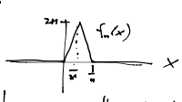

Convergent Series of Analytic Functions¶
Definition (Pointwise convergence of complex functions)
Given a sequence of functions
\(n=1,2,3,...\), we say \(f_n\) converges to \(f\) pointwise if \(\forall z\in S\),
i.e. \(\forall z\in S\), \(ε>0\), \(\exists N\) s.t. \(|f_n(z)-f(z)|<ε\) \(\forall n\geq N\).
We can also consider pointwise convergence of a sum of functions
if
If \(f_n\to f\) pointwise, we say \(\{f_n\}\) is the sequence of partial sums.
We want to know:
If \(f_n\) are continuous (or holomorphic), is \(f\)?
Does
Without more restrictions, the answer is no.
Consider the real-valued functions

Then
\(f_n\) defined by the picture:
where we have \(\lim_{n\to\infty}f_n=0\) but \(\lim_{n\to\infty}\int_0^1 f_n(x)dx=\lim_{n\to\infty} 1=1\).
So pointwise convergence doesn’t always preserve continuity or integrals.
The following convergence definition does.
Definition (Uniform Convergence)
converges uniformly on \(S\) if \(\forall ε>0\), \(\exists N\) s.t. if \(n\geq N\), \(|f_n(z)-f(z)|<ε\) \(\forall z\in S\).
Note
The subtle difference between this definition and the definition of pointwise convergence is that, in the uniform case, there must exist an \(N\) for the given \(ε>0\) that holds for all \(z\in S\) at once.
We say that \(f_n\to f\) uniformly on compact sets (also called Locally Uniformly (LU) Convergent) in \(S\) if for any compact subset \(K\subset S\), \(f_n\to f\) uniformly on \(K\).
Often, uniformly on compact subsets is enough to get what we need.
Lemma
If \(f_n\to f\) uniformly on compact sets in \(S\) and \(γ\subset S\) is a bounded curve, then
Proof:
But, \(\forall ε>0\), \(\exists N\) s.t. \(|f_n(z)-f(z)|<ε\) on \(γ\) (compact) for \(n\geq N\). So
(for all \(ε>0\))
Corollary
If
uniformly on compact sets on \(z\in S\) and \(γ\subset S\) (bounded curve), then
So